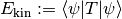

Observables¶
About the Observables class¶
The WaveBlocks Project
@author: R. Bourquin @copyright: Copyright (C) 2010, 2011, 2012, 2013, 2014, 2015, 2016 R. Bourquin @license: Modified BSD License
Inheritance diagram¶

Class documentation¶
-
class
WaveBlocksND.Observables[source]¶ This class is the interface definition for general observable computation procedures.
-
kinetic_energy(ket, T)[source]¶ Compute the kinetic energy .
Parameters: - ket – The object denoted by
 .
. - T – The kinetic energy operator
 .
.
Raise: NotImplementedErrorAbstract interface.- ket – The object denoted by
-
 norm
norm  .
. .
.